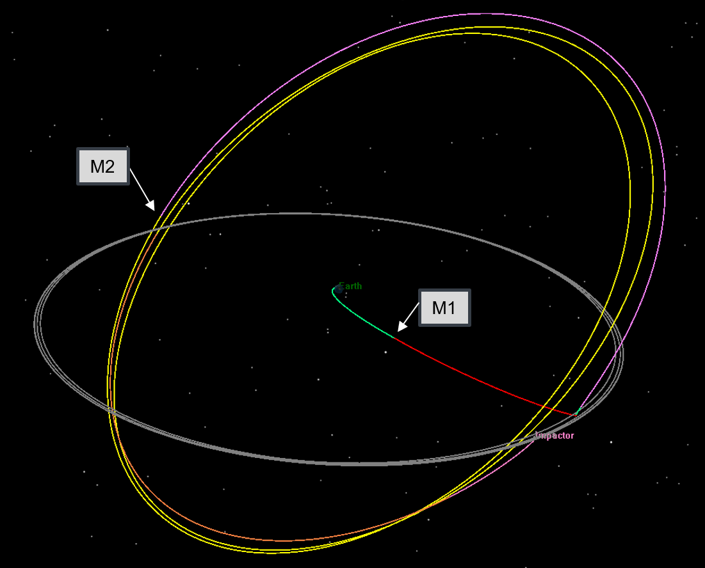
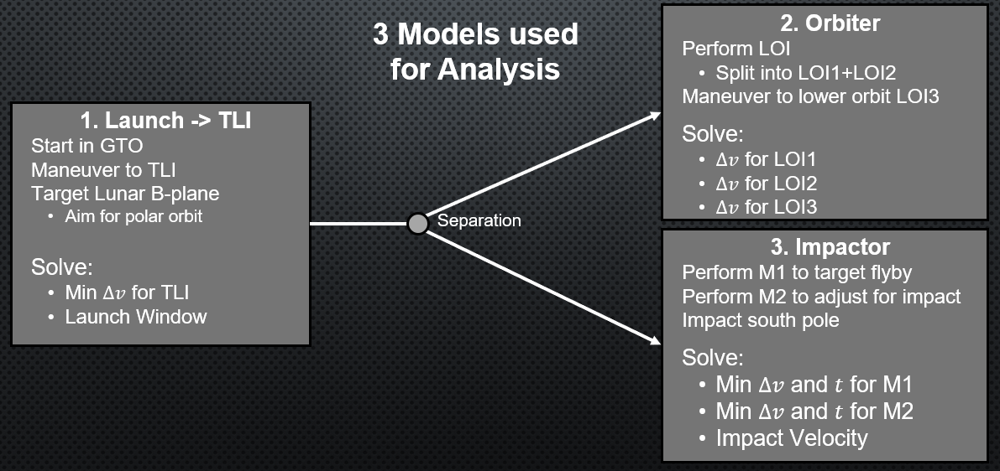
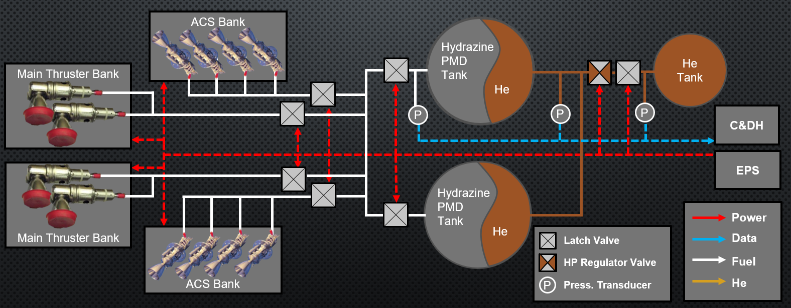

Lunar Impactor Mission
Using GMAT to design a dual-spacecraft lunar impacting mission
Lunar Impactor Project
For a semester long project at CU Boulder, I was part of a team of 12 graduate students working on designing a mission that would impact the lunar south pole and observe the resulting plume for a year as it settled. By impacting this region of the moon, scientists can study the composition of the surface and study the water content buried in the regolith.
Each student was a lead of a specific subsystem and we created a design, presented as a formal PDR. The project gave helping experience in formally documenting requirements and risks, while working in a large team. Bringing my experience with MSFC propulsion department and astrodynamics I was the lead of the propulsion system and helped worked on the trajectory design.
Trajectory Design
The mission requirements were to impact the lunar south pole and then fly through the plume to collect samples of what was disturbed with the impact. To achieve both of these requirements we were inspired by the LCROSS (Lunar Crater Observation and Sensing Satellite) mission. Our mission would include a more massive impactor which would eject material higher into the path of the observing satellite.
The mission would consist of an observation satellite on top of the Centaur upper stage of the Atlas 401. The Centaur upper stage would place the satellite into a lunar flyby orbit, and then disconnect from the observation satellite. The observation satellite would perform the first maneuver (M1) and enter into a low lunar orbit, while the second stage would continue on the nominal flyby enter a large polar earth orbit. The polar earth orbit is a 3:2 resonant orbit with the moon, which targets the south pole for the impact.
Modeling and Optimization In GMAT
To determine the propulsion requirements, I modeled this mission design using GMAT scripting with over 1600 lines of code and implemented an optimizer to find the cheapest maneuvers to achieve the mission requirements. The overall design used three models, one for launch, and one for the observation satellite and the lunar impactor.
The Launch to TLI consisted of targeting B-plane parameters to place each spacecraft into their appropriate orbits. It was used to find appropriate launch windows from KSC within our launch requirement. Then the two spacecraft separate, and each has their own model in GMAT. The first maneuver for the Centaur upper stage adjusted the B-plane parameters for the lunar flyby to place it into a large polar Earth orbit with the appropriate semi-major axis for the resonant orbit. Then, it targets the second corrective maneuver to ensure the impactor will hit the specified location on the lunar surface. The gap between M2 and impact allows for the upper stage to be purged of all fuel or other containments that would get picked up by the observation satellite.
Using a sequence of Lunar Orbit Insertion (LOI1 and LOI2) maneuvers, the observation satellite will enter the correct science orbit to observe impact. The observation satellite would be timed up with the impact using simple phasing maneuvers. It would first start at a higher altitude to maximize the observation time of the impact event. The starting altitude was driven by the characteristics of the observation equipment, to ensure the ground resolution will meet the mission requirements. After observation over several orbits, the satellite will then carefully drop its altitude above the impact site to 75 km to collect samples of the plume using maneuver LOI3.
For the impactor, the two maneuvers M1 and M2 were found using a multiple shooting Yukon optimizer with a patch point between moving forward from separation and working backwards from the impact location. Using nonlinear constraints to ensure that the patch points worked correctly, the optimizer varied the times of the maneuvers to minimize the total Delta V cost of the mission.
Propulsion System
Designing the propulsion system for the mission was my main responsibility. By using the information gathered from the GMAT trajectory models, I was able to appropriately size and design a propulsion system with redundancies to avoid a "Tree falling in the woods with nobody around to hear it" scenario. The system design is shown above, and highlights the redundant nature of the system. Since the impactor is the already thoroughly designed Centaur upper stage, the design focuses on the observation satellite.
Using a Pressure Management Device (PMD) the propulsion system can control the flow of hydrazine to the different banks of thrusters on the satellite. Latch values provide redundancy and the mission design is tolerant of failures of any one bank of thrusters. As long as the observation satellite can capture into lunar orbit during the first flyby the mission will remain successful. Since there are a few months before the impact occurs after the lunar flyby, the observation satellite has enough time to adjust the orbit into position using half as much thrust over several orbits.
Much of the process consisted of identifying the system requirements and performing proper risk management to the system. The design focused around creating a minimal system that met these requirements while best mitigating the risks.
Fuel Budget
The Fuel budget was found using the trajectory delta V requirements and was worked alongside designing the propulsion system. Since one of the mission objectives is to maximize the impact energy (KE= 0.5*mass*velocity^2) the mass of the impactor has to be maximized as well. The final fuel budget for both spacecraft were used to determine the size of the impactor and thus estimate the performance of the mission.
Final Design
By using GMAT to design an optimal trajectory for two spacecraft, I was able to appropriately design and validate a propulsion system. Throughout my work I was able to practice and improve my documentation and systems engineering skills. I got experience with identifying and calculating risks and understanding how they interact with other systems. Overall, it was a very interesting project that I am glad I had the opportunity to work on.